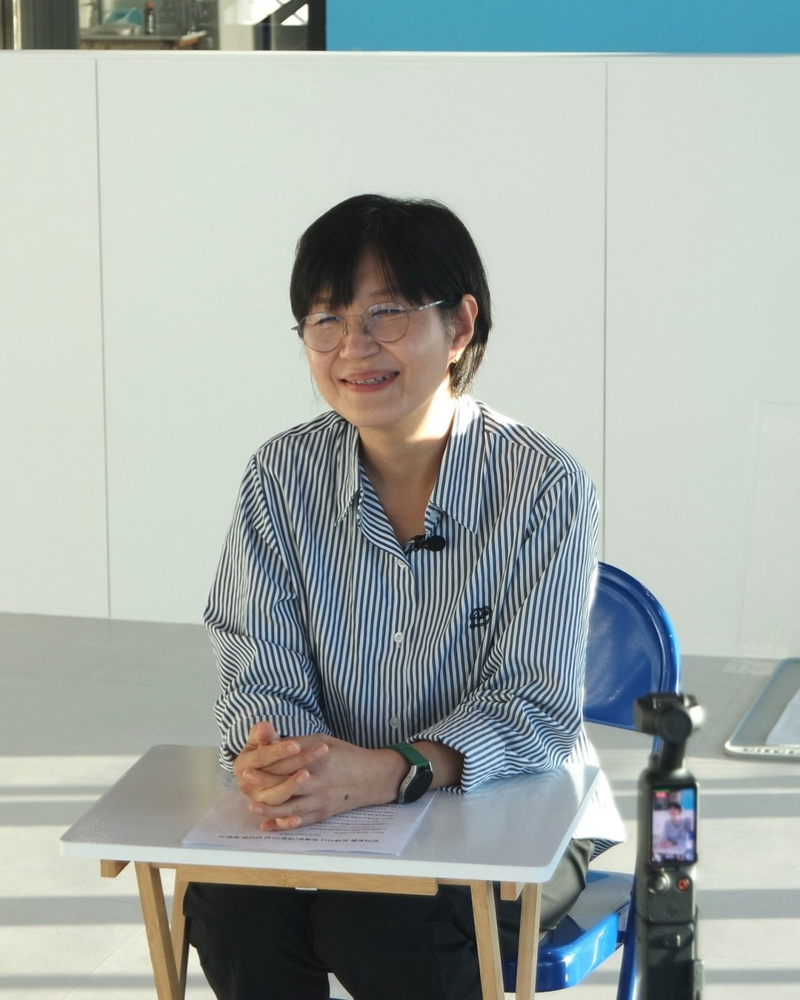

For dog trainer 최혜정, ‘Emily,’ Jeju was long a business-trip destination. Back in their office-worker days, it was a place they came and went to attend conferences.
“I really came here a lot on business trips, for conferences. A lot of them were day trips, too. There was no time to look at the scenery and feel at ease.”
— Emily, dog trainer at MIT DOG
That same Jeju has now become home. Having lived in Jeju for three years, Emily runs MIT DOG, a dog training center in Hallim. On the island they used to leave once their work was done, they now build their life while carrying on the work they love.
A second career, chosen after burnout
Emily worked as an office worker for a long time. Burning out at the end of their years in corporate life, they began to look back on the work they had wanted to do.
“For a very short while, I wanted to be a vet. But realistically, going back to study veterinary medicine would have taken a lot of time. Still, I wanted to work with animals, and I wanted to help people who live with animals.”
The second career they chose was dog trainer. It was work that meant being with animals while also helping the people who live with them.
What led Emily, then a trainer on the mainland, to stay in Jeju was family. They had been coming and going to see their parents, who had settled in Jeju first after retiring, and as their father’s illness worsened, the stays grew longer. It was to care for their father together with their mother.
The Jeju Emily came to know by their father’s side
Even after beginning to stay with their parents, Emily had little time to enjoy Jeju. What gradually caught their eye, in the time spent caring for their father, was Jeju’s nature.
“When things were hard, I’d drive out and watch the sunset, look at the sea, and walk the Olle trails. I think having nature so close gave me a lot of comfort.”
The place Emily settled was Hallim. The biggest reason was that their parents had settled there first. There was also a wish to try living a little more leisurely, close to nature.

And so Hallim became both the place where they care for their parents and the place where they carry on their own work. It was here that Emily opened the doors of their dog training center.
Training where the people who live with dogs learn, too
MIT DOG focuses on training such as private lessons and group classes, in which owners and their dogs take part together. What Emily considers important is learning how to live together while understanding a dog’s mind and daily life.
“Not training dogs only for our own needs, but understanding their minds and their lives, living together and becoming happier. That’s the direction I’m pursuing.”

There is one owner Emily has long remembered. It was someone who came to the center with a dog that reacted to small children with something close to panic.
According to Emily, the owner steadily put into practice the methods they had been taught. Over time, the dog changed so much that it could take treats from a child and go for walks around the neighborhood. The owner introduced Emily to the people around them like this.
“It looks like Emily comes to train my dog, but actually, I’m the one being trained.”
Emily has long remembered those words. The process in which the people who live with a dog learn and change is also an important part of the training Emily pursues.
The trainer also stressed understanding a dog’s changes and waiting for them.
“Animals aren’t robots that switch on and off. Like turning a dial, they can get a little better, and then a little worse. You have to understand that process and wait for them.”
Carrying on their own way in Hallim
Carrying on in Jeju the work done on the mainland was not always smooth. One of the problems Emily ran into was the distance to the center.
Once, a client who had even booked a consultation checked the map and canceled, saying, “Oh, so that’s where it was. It’s too far, I don’t think I can make it.” At times, the center’s location stood in the way of clients visiting.
The interests of the owners Emily met differed, too. When Emily worked in Seoul’s Gangnam area, many owners showed strong interest in training itself. In Jeju, Emily said, many of the owners they met were more interested in letting their dogs run and play freely in nature.
Having experienced these differences, Emily is thinking about how to make the training they offer known in Jeju.
“If anything, because it’s a method and a philosophy that’s uncommon here, I want all the more to spread the word. But rather than pushing too hard, I’m thinking about ways it can blend naturally into Jeju.”
Between ease and monotony
Emily’s life changed after coming to Jeju. Unlike their office-worker days, when they moved to the organization’s rhythm, they now set their own schedule and do the work they love.
“I have more room to breathe, and things have become simpler. But I think it’s also become a little monotonous.”
Emily does not recommend moving to Jeju lightly. The ease of the early days, they said, may come to feel like boredom for people who want a variety of activities and new stimulation. In their view, young people should also take a realistic look at jobs and wages.
“If you come because there’s something you really want to do and you want to pursue it, I think the possibilities are endless. There will be walls, though. But coming simply because you like nature might be a little risky, I think.”
Living with a dog close to nature has its inconveniences, too. Emily said there are a lot of ticks and bugs, and on some walking routes there aren’t enough sidewalks, so cars pass right beside you.
Emily sometimes goes to Wollyeong Cactus Village for a walk, or walk along beaches and short oreum (Jeju’s volcanic cones).
But these days, the time Emily enjoys is more ordinary. It is the time they spend sitting with their dog in the yard of their house, feeling the breeze and soaking up the sun.
The paths Emily walks with their dog
From Wollyeong Cactus Village to the beach and a short oreum. Swipe through the photos inside the island.

01. Wollyeong Cactus Village
A walking path to stroll with your dog
A village in Hallim that Emily visits to walk with their dog. It is a walking course where you can stroll with your dog close to nature.
This work uses '바다를 따라 만나는 선인장 군락지' (Cactus colonies along the sea), created in 2022 by the Korea Rural Community Corporation and released under KOGL (Korea Open Government License) Type 1. The work can be downloaded free of charge from the Korea Rural Community Corporation's Welchon (www.welchon.com).
- Published
- Interviewer
- 원예은
- @e_jeju.min